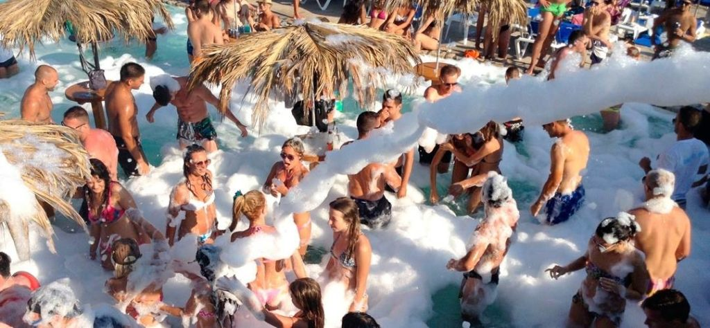
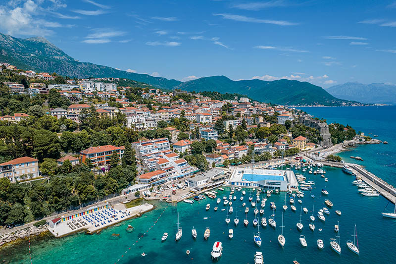
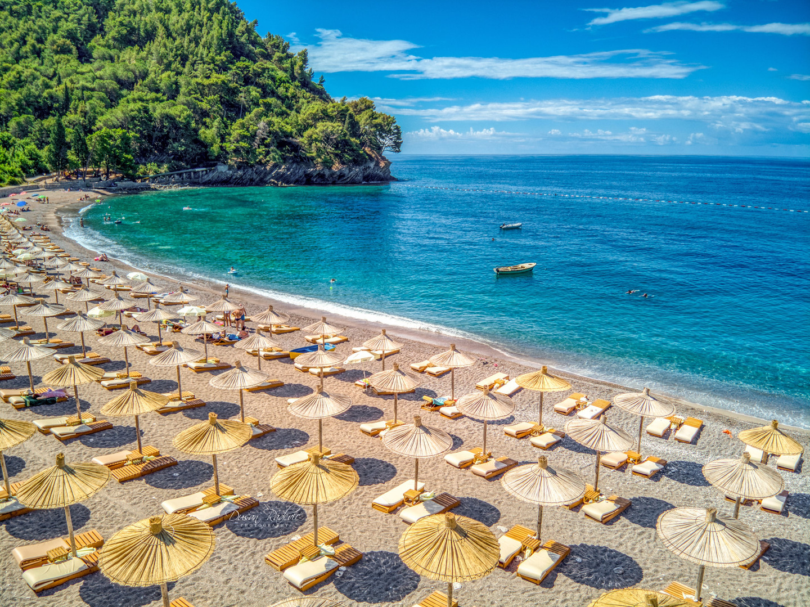

Letuj u Crnoj Gori

Budva - primorski grad, mesto na kojem nastaju najbolja letovanja, prostor za nezaboravan provod i
upoznavanje autentičnih morskih lepota.
Budva već godinama važi za destinaciju koja neprikosnoveno drži titulu najposećenijeg letovališta u Crnoj Gori,
te mesta u kojem se uvek traži jedno mesto više.
Ukoliko ste od onih turista koji vole aktivan odmor, u Budvi ćete pored uživaja na plaži moći da pronađete i dodatne zanimacije.
Budva je medju mladima izuzetno popularna, jer je nocni provod u Budvi nezaboravan.

Dobro došli na mesto koje predstavlja sve detalje o biseru Boke Kotorske, predivnom letovalištu,
mestu na kome se stvaraju nezaboravne letnje uspomene.Herceg Novi se naziva još i grad hiljadu koraka, i to nije slučajno.
Za sve one koji vole aktivan odmor, pored svakodnevnog plivanja mogu i pešačiti dugim šetalištem
Pet Danica ili peške obilaziti sve znamenitosti u gradu i bližoj okolini.

Petrovac na moru je drugi po veličini i popularnosti grad Budvanske rivijere,
poznat po svojoj blage plaže sa sitnim šljunkom i mekom lekovitom klimom.
Grad se nalazi u Crnoj Gori na obali pored malih živopisnih uvala. Petrovac bukvalno predstavlja amfiteatar
od mini-hotela, vila i vikendica, izgrađenih na brdu sa borovima i maslinama.
Posebno Petrovac je lep u večernjim satima, kada su svetla uključena i osvetljena cijela riva.
Ovo je neverovatno prijatna i romantična atmosfera jadranske obale.
